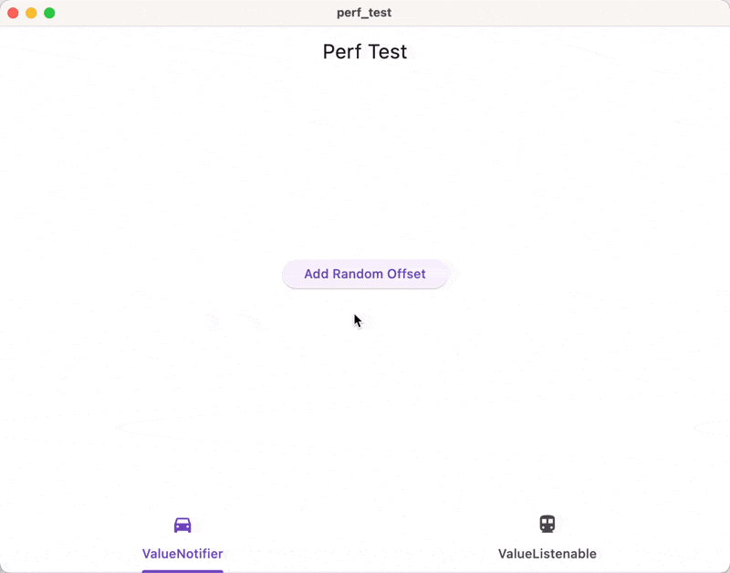

Introducing dust v0.0.1
This is going to get us embarrassed real bad. Please don’t laugh at us if you think we are stupid.
I wasn’t really going to release this out loud to the public, but I realized that we are at a stage where we need some feedback and a little nudge from the community. Having this project worked on and used “internally” on an yet-to-launch note-taking app will not get it anywhere.
Be warned that dust is far far from mature yet. The API is different from what we show here (we are doing a major API refactoring which would take us about a week’s time). Many critical features are missing. No sensible docs. You probably would have difficulty getting it building for your app because we tried to run Rust with Flutter. We haven't even published on pub.dev. Oh, by the way, the package name is still qinhuai, which is what we used to call it and we haven’t updated that yet.
However, if you aren't afraid of getting your hands dirty with git submodules and cargo or shooting yourself in the foot by using a constantly-having-massive-breaking-changes database/state management solution, you are welcome to try it out in your new pet Flutter project!
Regardless, here is our telegram link. Do hop in and give us some feedback and encouragement :-)
What is the problem?
As a front-end developer, there are three major things that we need to worry about and cause the most amount of trouble for us: state management, persistence, and synchronization. dust is our attempt to settle all these three questions at once.
The problem that we see with existing solutions is that they often require you to manage so many different things. As a front-end developer, you often need to ensure that
-
The UI state and the application state are in sync;
-
The application state and the local database state are in sync;
-
The local database state and the remote state are in sync (if you choose to support cross-platform sync).
If any of these things are not correctly managed, you will have a buggy application. And if there is anything that I know about synchronization, it would be that it is hard. Super hard. How hard?
Spotify desktop’s “Friends Activity” barely worked on my friend’s machine:

Google’s YouTube on iOS had a lot of UI glitches for me when I tried to switch from dark mode to light mode. (Can’t find a screenshot right now).
And these are not just some random small development teams doing these apps. They are huge companies with a large team dedicated to the development. Yet, there are still problems in managing the front-end state somehow.
Further, as a front-end developer, I often find myself engaged in this mental model of a View, a ViewModel, and Models, which would often lead me into this loophole of duplicating the same or similar code in several different places. Are these things really necessary? Can't a Model itself just somehow be a ViewModel?
“This is impossible. You must be absurd.”
Yes, I agree. Things that exist do exist for a reason.
However, not every app is like YouTube or Spotify or whatever that needs to handle sophisticated use cases and massive amounts of data. People share about technology that they are proud of, and more often than not, these technical solutions tend to be very nerdy and hard ones.
More often than not, we can’t afford to do like what they did. And in most situations, we DON’T NEED to do what they do. You don’t need to have AWS Cognito User Pool linked with DynamoDB and lots of custom resolvers with API Gateway and GraphQL to build a to-do list app or a small app for your business. You also don’t need to implement clean architecture in any way or shape or form.
What you need is to think about the specific problems and use cases that matter, and try to address the business logic directly with minimum friction from what your solution is. That’s what we built dust for.
What leads us here
Skip to here if you are not interested in how we arrived at dust.
In roughly around Jan. 2021, my first year of college, I discovered Flutter. In my last year of high school, I worked at MarginNote for 6 months and had a decent amount of experience in the productivity software region. At that time, it was still a big problem where the majority of nice-to-use productivity software was on the iOS side. As a result, we started building an app called dynote.
As we started building, quickly two problems emerged: state management solutions being sub-optimal and lack of a database solution that checked all the boxes for us.
State Management
We swapped out several different state management solutions, from BLoC to MobX to Riverpod, but none worked for us.
Are Immutable Data Better?
The first issue that we had with those very advanced state management solutions is that they often rely on data immutability. This is because, with immutable data, you can have a quick comparison between two objects, hence allowing the library to be notified of when a change occurred.
However, this does not look ideal to us, as we were dealing with lots of stroke points per stroke that get updated quite frequently. This would be equivalent to having an \(O(n^2)\) operation every time we need to add something to the stroke.
Granted, the UI still needs to be redrawn every time we make an update to the list, but having to copy the object again every time that we make an update does not feel nice. And, there is a difference in the real world too.
I did a simple dirty test of rendering 10000 dots on a canvas with the two different variants of notifiers, one that which a copy of a list is made each time we update something and another where we just simply add to the list.
final class ListNotifier<T> extends ChangeNotifier
implements ListNotifierBase<T> {
ListNotifier(this.value);
@override
final List<T> value;
@pragma('vm:prefer-inline')
@override
void add(T item) {
// using a mutable list and then crow.
value.add(item);
notifyListeners();
}
}
final class ListCopyNotifier<T> extends ValueNotifier<List<T>>
implements ListNotifierBase<T> {
ListCopyNotifier(super.value);
@pragma('vm:prefer-inline')
@override
void add(T item) {
// similar to the normal copy action that you would perform.
value = [...value, item];
}
}
I don’t know how to measure the performance, but as can be shown here, there is a huge performance difference when I try to consecutively add 10000 points to the UI.

The tab on the left is using the
ListNotifierand the one on the right is using theListCopyNotifier.
Compared with just manually calling notify every time, a significant portion of the CPU is wasted on doing the ListCopyNotifier.add method.
An initial idea would be inside the freezed
data class, we set the makeCollectionsUnmodifiable flag to false. This allows
us to modify the collection inside a data class.
@Freezed(makeCollectionsUnmodifiable: false)
class Stroke with _$Stroke {
const Stroke._();
const factory Stroke({@Default([]) List<Offset> points}) = _Strole;
Stroke withAddPoint(Offset point) {
points.add(point);
return this;
}
}
However, this alone won’t work with most of the state management solutions. Because you are simply returning this, the comparison would end here, and it would not trigger an update in most of the state managers. We will have to work around the "smart" rendering-saving techniques of those state managers to force an update:
@Freezed(makeCollectionsUnmodifiable: false)
class Stroke with _$Stroke {
const Stroke._();
const factory Stroke({
@Default([]) List<Offset> points,
@Default(0) int forceUpdate,
}) = _Strole;
Stroke withAddPoint(Offset point) {
points.add(point);
return copyWith(forceUpdate: forceUpdate += 1);
}
}
This would ensure that the equality checks between two states fail, therefore allowing the UI to be re-rendered. Having to dig through the source code of the state management library and try to bypass its limitations was not pleasant.
This leads us to ask the question: at the end of the day, is it true that immutable data are better than mutable ones?
Duplication of States
Another thing that you may have noticed, is that to cater to the needs for different state management solutions, we have to often create two sets of models representing the same data. One set is used to be persisted to the local disk, and the other set is to be used to update the user interface.
For example, I could have a stroke that’s a list of points declared in Isar:
There is no way for me to directly modify the points of this model while still
keeping the UI updated, as the ListList<Point>,
compound with reactivity, and then by the time you finish modifying a stroke,
you add it to the points stored in Isar.
And this is not just unique with strokes and points. Say that you are designing a file system, where a Folder can be either a parent or one of the children. It would be non-trivially hard to get everything right with the database state and a state management solution. For example, if you try to load the children and store them in your "ViewModel" of folders, what happens if I move one of the children out? How does the underlying state work? How do I notify other view models that such a change has occurred? Further, how do I keep the UI state consistent with the data state?
Please don’t laugh at me: the naive me back then spent a lot of time implementing the file management page for the note-taking app three times, each time trying to fix some issue that randomly bumped up that I did not previously think of. I thought it was a skill issue of mine that I could not get everything right. Granted, there are certain elements of that. However, now I also think that the current mental model of “MVVM” also contributed to a lot of the complexity concerning such an issue. You need to try to make different systems (the backend database, the state management solutions, and the UI) talk to each other, and they may not have the most compatible API ever.
Database
We not only had problems with state management, but we also had tons of issues with persistence and synchronization. Coming from an iOS background, I thought that allowing users to synchronize data across different platforms was a very simple task. Boy was I so wrong.
| iOS | Android | MacOS | Windows | Linux | Web | Offline | Sync | |
|---|---|---|---|---|---|---|---|---|
| Firebase | ✅ | ✅ | ✅ | ❌ | ❌ | ✅ | üü† | ✅ |
| Amplify | ✅ | ✅ | ❌ | ❌ | ❌ | ❌ | ✅ | ✅ |
| Isar | ✅ | ✅ | ✅ | ✅ | ✅ | ❌ | ✅ | ❌ |
| ObjectBox | ✅ | ✅ | ✅ | ✅ | ✅ | ❌ | ✅ | ✅ |
| Supabase | ✅ | ✅ | ✅ | ✅ | ✅ | ✅ | ❌ | ✅ |
| Appwrite | ✅ | ✅ | ✅ | ✅ | ✅ | ✅ | ❌ | ✅ |
üü† Indicates that there is partial support.
However, supporting all of these platforms/features was one of our key requirements when we were developing the app Dynote. Further, when we started, Supabase and Appwrite were not as big as they are now.
Ant if you dive deeper into the database platform support, you will realize that some of them are bad.
For example: I’ve hardly ever seen a so-called “production-grade” software written worse than AWS Amplify. Its DataStore does not work most of the time for me, for some obscure messages that no one could understand. It promises local support, but only when you dive in you realize that the local-first approach only works on mobile but on desktop. It allows you to write interfaces in the GraphQL schema, but it never generates the interface in Flutter code. There is no way of knowing how it loaded its links, and it’s far from possible to keep the objects in sync across different places. Since I am currently interning at a small business building software for them and dealing with Amplify on a day-to-day basis, I could not even count how many times I shot myself in the foot by using Amplify.
As a result
We built dust.
It was mostly Bridgecat’s brain-child that dust is built. When I first encountered issues with state management, I thought it was my skill issue because although I started programming when I was 13 years old, I had always been a casual programmer. It took me a long time back then to figure out that if statements cannot directly live inside the body of a class.
Bridgecat, however, is a genius. He built a Minecraft clone when he was in 5th grade using basic and OpenGL, and later on, rewrote it in C++ and OpenGL. He also did competitive programming. However, when he mentioned to me this idea, I was very skeptical. We were already slow in building the note-taking app because we did not have enough time, and we needed to build a new database and state-management solution, what? When is that going to be production-ready? When are we going to ship the app?
However, we are just friends building apps together. We called our “company” ParkourLabs and one of the core missions that we had was “friends having fun together.” I voiced my rejection, and bridgecat ignored it and went to work. I am glad he did.
Introducing dust
*WARNING: The code shown below only indicate how dust's API will look like after we finish our current major refactoring (into using a freezed-like declaration style). We expect it to be done within a week by Feb 25, 2024. I want to publish dust by my birthday, so …*
Dust is our attempt to solve the problems that we have encountered while building the dynote app. Suppose that we are building a Todo list app (not again~)
Define a Model
dust's API is heavily inspired by freezed, the package that we as Flutter developers love dearly for handling data classes and unions. For demo purposes, let's assume that we are building a todo-list app. (Hey, who doesn't like to-do lists?)
import 'package:dust/dust.dart';
part 'todo.dust.dart';
@Model()
class Todo with _$Todo {
Todo._();
factory Todo({
required String name,
String? description,
@DustDft(false) bool isCompleted,
}) = _Todo;
}
Then, run code generation with build_runner, and your model has been set!
Register the repository
The code shown above will generate an additional class named $TodoRepository. The $ prefix is used to signify that it is generated code. For dust to work, you will need to register the $TodoRepository with dust.
Future<void> main() async {
final docsDir = await getApplicationDocumentsDirectory();
final dataPath = p.join(docsDir.path, 'data.dust');
Store.open(docsDir, [
const $TodoRepository(),
]);
// ... other code
}
Now you are all set!
CRUD Operations
If you want to create a Todo, simply do as follows:
If you want to read a Todo, do as follows:
If you want to update a Todo, simply do as follows:
If you want to delete a Todo:
If you want to query all the todos:
Look at the API above, and you will notice a few interesting things:
-
You don’t have to worry about anything related to saving the data to the database. Dust handles them for you. You just need to focus on creating the model, using it, and deleting it when you need to.
-
There is no async/await. Would it cause user-perceived lag? We think not. Native software generally does not deal with huge amounts of data, and modern databases are generally able to answer these queries at a very fast pace.
-
We have yet to get to the network layer implementation yet, but the data will even be automatically synchronized once we get our hands on it!
Links
One of the more advanced features in dust is the support of Link,
Multilinks, and Backlinks in both persistence and state management.
Say that now you want to add a tag:
@Model()
class Todo with _$Todo {
Todo._();
factory Todo({
required String name,
String? description,
@DustDft(false) bool isCompleted,
@Multilinks() List<Tag> tags,
}) = _Todo;
}
@Model()
class Tag with _$Tag {
Tag._();
factory Tag({
required String name,
@ColorSerializer() @Default(Colors.orange) color,
@Link Tag? parent,
@Backlinks(to: "parent") List<Tag> children,
@Backlinks(to: "tags") List<Todo> tags,
}) = _Todo;
}
Then, dust would generate the corresponding fields for you with the relationships maintained. If you create a Tag and set its parent to some other Tag, then this Tag would appear in the children of the other Tag as well. More importantly, both tags would be of the exact same instance. This means that any transient fields that you store in the model can be used as a shared runtime state.
final parent = Tag(name: "ParkourLabs");
final tag1 = Tag(name: "dust", parent: parent);
final tag2 = Tag(name: "dynote");
parent.children$.insert(tag2);
final toPrint = parent.children$.get(null).map((e) => e.name$.get(null)).join(',');
print(toPrint); // dust, dynote
print(tag1.parent$.get(null).name$.get(null)); // ParkourLabs
print(tag2.parent$.get(null).name$.get(null)); // ParkourLabs
assert(identical(tag1.parent$, parent$)); // true
assert(identical(tag2.parent$ == parent$)); // true
State Management
If you have noticed the "ugly" .get(null) API and have been wondering why we
need to specify null in it. Here is the answer: you can optionally pass in an
Observer instance to observe the changes in the field, or you could choose to
use .get(null) to simply get the value inside without any reactivity.
The rationale behind us making the Observer required but optional is that we want to remind you to explicitly think about whether you will need to subscribe to an observer. Oftentimes, we tend to forget such matters, and it would be difficult for us to realize or debug. While you may have to type more characters, we believe that this is a justifiable sacrifice. (We are implementing an optional flag where you can generate the convenient getters if you so choose).
So here is how we implement a list of todos in dust:
class TodoList extends StatelessWidget {
const TodoList();
@override
Widget build(BuildContext context) {
// can choose a reactive widget
return ReactiveBuilder(
builder: (context, o) {
final list = const $TodoRepository().all().get(o);
return ListView.builder(
itemCount: list.length;
itemBuilder: (context, index) => TodoView(todo: list[index]),
);
},
);
}
}
class TodoView extends ReactiveWidget {
const TodoView({required this.todo});
final Todo todo;
@override
Widget build(BuildContext context, Observer o) {
return ListTile(
title: Text(todo.name$.get(o)),
subtitle: Column(
children: [
Text(todo.description$.get(o) ?? 'No Description'),
const SizedBox(height: 8),
for (final tag in todo.tags$.get(o))
Chip(label: tag.name$.get(o)),
],
),
onTap: () {
if (todo.completed$.get(null)) {
todo.completed$.set(true);
} else {
todo.completed$.set(false);
}
}
);
}
}
And you can implement a button to create a Todo anywhere -- it will be saved to the database and the ReactiveBuilder would be notified as well.
The list of todos would be automatically updated. If you add a tag to the todo, the tags list of the todo would also be updated as well.
We are actually pretty bad
Are you excited? Calm down.
In writing this article, I find myself constantly getting hyped up by what we built. However, I worry that what I wrote would mislead you into thinking that we are doing what we did. I worry that my article would lead you into the same feeling when I read through the documentation of GetX, where I couldn't understand a lot of things, thinking that GetX was truly brilliant, and ended up realizing that they are overstating a lot of ungrounded claims.
While I do think that dust is going to solve a lot of problems, it doesn't solve all.
For example, because we are targeting local-first development, we built an AP (Available & Partition-Tolerant, this is a concept in the CAP theorem) layer on top of sqlite. This essentially means that you cannot ensure certain guarantees on your data using dust. You would not be able to store the amount of coins that a user has in dust and guarantee that the user's balance is always above zero. You simply cannot do this because we guarantee that the user will always be able to write to the local database.
To worsen the issue, dust is still at a very early stage. This means that a lot of things have not been implemented and a lot of problems have not been solved. This includes but is not limited to:
-
The APIs shown above have not been fully implemented yet. The majority of the work has been done, and are getting there really really soon.
-
The model names and the field names cannot be changed without losing access to the data. We still need to implement a few annotations to get that right.
-
We do not have any means of query filtering. You will have to query then filter, or make use of the graph database capabilities by creating separate entities and linking them together.
-
The synchronization has not been implemented yet. We need to implement a few network calls to get that right, but we haven’t touched upon that part.
-
The APIs are not yet stable, and we will have a lot of limitations.
Join our community
Are you still excited after seeing the previous section?
Let’s go!
We would love to hear from you. Here is our telegram group link and github repository again:
We are looking forward to talking to you!